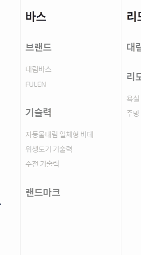
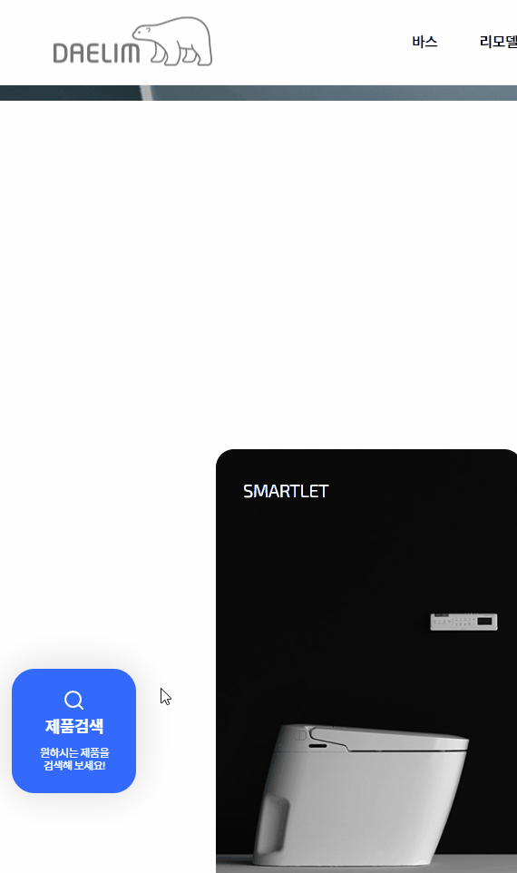
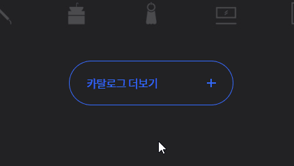
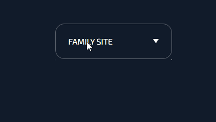

포트폴리오
1. gsap애니메이션
페이지로딩시 빈화면에서 글씨가 올라오는 애니메이션을 gsap로 구현하였다.
gsap의 timeline 기능을 이용하여 공통으로 들어가는 속성을 하나로 묶은 뒤 애니메이션 각 요소의 애니메이션이 겹치도록 시간을 조절하였다.

작성방법
js
1 2 3 4 5 6 7 8 9 10 11 | box = gsap.timeline({ defaults:{y:-80, stagger:0.1, duration:1,opacity:1, }, }) box .to('.sc-visual .group-title .main-title',{},"0.3") .to('.sc-visual .order-area .link-pour',{},"-=0.8") .to('.sc-visual .order-area .link-singly',{},"-=0.8") .to('.sc-visual .spec-list .spec-item:nth-child(1)',{},"-=0.6") .to('.sc-visual .spec-list .spec-item:nth-child(2)',{},"-=0.8") .to('.sc-visual .spec-list .spec-item:nth-child(3)',{},"-=0.8") | cs |
2. 버튼 애니메이션 한번만 작동하게 하기
스크립트로 애니메이션을 만들었을때 마우스가 요소를 벗어났다 다시 들어올때 애니메이션의 작동이 끊기는 문제를 해결하기 위해 hoverFlag 라는 변수를 만들어 활용하였다.
애니메이션의 작동조건을 hoverFlag = 0 으로 설정하였고 애니메이션 작동 중에는 hoverFlag의 값을 1이 되고 애니메이션이 끝나면 다시 0이 되도록 만들어 마우스가 여러번 들어갈때 애니메이션이 반복되는 문제를 해결하였다.

작성방법
js
1 2 3 4 5 6 7 8 9 10 11 12 13 14 15 16 17 18 19 20 21 22 23 24 | const siglyHover = gsap.timeline({ paused:true, onComplete:function(){ hoverFlag = 0; } }) siglyHover .to('.link-singly .bar',{width:0}) .set('.link-singly .bar',{right:0,left:'auto'}) .to('.link-singly .bar',{width:'100%'}) let hoverFlag = 0; $('.link-singly').mouseenter(function(){ setTimeout(function(){ if(hoverFlag == 0){ siglyHover.restart() hoverFlag = 1; } },500) }) | cs |
3. 점점 차오르는 글씨 애니메이션
gsap의 scrollTrigger와 css속성중 clip-path를 이용하여 마우스 스크롤을 내림에 따라 반투명한 글씨를 흰색 글씨가 채워가도록 만들었다.
clip-path란 요소의 일부분을 원하는대로 잘라낼 수 있는 css 속성이다. 수동으로 값을 조절하기에는 상당히 어려움이 있기 때문에 도움이 되는 사이트를 참고하며 이용하는것이 좋다.
아래의 사이트(https://bennettfeely.com/clippy/)에서 미리 만들어져 있는 도형을 고르거나 자신이 직접 마우스를 조작하여 조절한 후 밑의 css 값을 사용하면 된다
작성방법
js
1 2 3 4 5 6 7 8 9 10 11 12 13 14 15 | const videoBgAni2 = gsap.timeline({ scrollTrigger:{ trigger:".sc-vision", start:"0% 35%", //트리거기준 end:"120% 80%", // ''만나면 종료 // markers:true, scrub:0, }, }) .to('.sc-vision .text-front',1,{ 'clip-path': 'polygon(0% 0%, 100% 0%, 100% 100%, 0% 100%)',stagger:1, }) .to('.sc-vision .vision-area',3,{ opacity:0, }) | cs |
4. swiper 꾸미기
swiper의 이전 다음 버튼과 하단 게이지바를 꾸미기 위해 분석해본 결과 버튼의 경우 <div class="swiper-button-prev">의 after에 화살표아이콘이 들어가 있는 것을 알 수 있었다.
그중 인상적이엇던것은 화살표의 크기를 font-size로 제어하고 있었다는것이었다. 하단 게이지바는 <div class="swiper-pagination-progressbar"> 로 구성되어 있었다.
작성방법
css
1 2 3 4 5 6 7 8 9 10 11 12 13 14 15 16 17 18 | .sc-delivery .swiper-button-next, .sc-delivery .swiper-button-prev{ width: 110px; height: 112px; background: transparent; border-radius:50%; border:1px solid rgba(255,255,255,0.3); transition:background 400ms; --swiper-theme-color:#fff; } .sc-delivery .swiper-pagination-progressbar{ left: 100px; width: calc(100% - 200px); height: 1px !important; background: rgba(255,255,255,0.2); bottom:35px; } | cs |
5. 패럴렉스이미지
패럴렉스를 적용하기위해 gsap의 scrollTrigger와 yPercent를 이용하였다.
yPercent의 경우 인라인스타일로 transform이 적용되어 기존의 값이 밀리게 되었다. 이를 해결하기 위해 <div>로 감싸주고 부모요소에 transform을 적용하여 해결하였다

작성방법
js
1 2 3 4 5 6 7 8 9 10 11 12 13 14 15 16 17 | $('[data-scroll]').each(function(i,element){ y = $(this).data('scroll'); gsap.to(element,{ scrollTrigger:{ trigger:element, start:"0% 100%", end:"100% 0%", scrub:0, }, yPercent:y }) }) | cs |
6. checkbox 꾸미기
<input type="checkbox">는 디자인이 적용되지 않아 <label>을 만들어 checkbox와 연결한 후 <label>을 꾸며준 뒤 <input type="checkbox">를 숨겨 해결할 수 있다.
체크표시된 후를 꾸미기 위해서 css의 의사클래스인 :checked를 사용하여 따로 선택할 수 있다.
See the Pen checkbox design by haesung (@redbeanjelly) on CodePen.
작성방법
css
1 2 3 4 5 6 7 8 9 10 11 12 13 14 15 16 17 18 19 20 21 22 23 24 25 26 | .sc-contact .email-area .checkbox{ display:none; } .sc-contact .email-area .checkbox + label{ position: absolute; border-radius:none; width: 24px; height: 24px; background: transparent; border:1px solid #1b1b1b; } .sc-contact .email-area .checkbox:checked + label{ background-color: #fff; } .sc-contact .email-area .checkbox:checked + label::after{ background-image: url(../images/check-icon.png); background-size:cover; content:''; position: absolute; width: 13px; height: 13px; z-index:1; left: 50%; top: 50%; transform: translate(-50%, -50%); } | cs |
1. swiper 페이지변경 감지하여 배경전환
swiper.on('transitionEnd')을 사용하면 swiper 슬라이드가 변경되는 것을 감지하여 스크립트를 작동시킬 수 있다.
swiper.realIndex를 사용하여 현재 인덱스 번호를 반환하여 미리 배열로 만들어둔 마크업을 제이쿼리 메서드인 .html()로 넣는다
작성방법
js
1 2 3 4 5 6 7 8 9 10 11 12 13 14 15 16 | visualBg = [ `<video autoplay loop="true" muted> <source src="./asset/video/video-bg.mp4"> </video>`, `<img src="./asset/images/mainvisual-img-02.jpg" alt="">`, `<img src="./asset/images/mainvisual-img-03.jpg" alt="">`, `<img src="./asset/images/mainvisual-img-04.jpg" alt="">` ] swiper.on('transitionEnd', function() { let idx = Number(swiper.realIndex); // console.log(visualBg[idx]); $(".sc-visual .group-bg").html(visualBg[idx]) }); | cs |
2. 스크롤다운 버튼
.scrollTop()의 활용하여 화면의 높이만큼 스크롤 되는 버튼을 제작하였습니다.
.offset()을 사용하여 높이값을 구한 뒤 높이값 만큼 스크롤이 되도록 구현하였다.

작성방법
js
1 2 3 4 5 | let sectionOffset = $("#section1").offset(); $(".btn-scroll").click(function(e){ e.preventDefault(); $("html, body").animate({scrollTop:sectionOffset.top},1300); }) | cs |
3. gsap stagger 활용하기
stagger를 활용하여 애니메이션이 순차적으로 나오게 만들 수 있다.

작성방법
js
1 2 3 4 5 6 7 8 9 10 11 12 13 14 15 | let yVal = 80 gsap.to("[data-fade1]",{ opacity:0, y:yVal, duration:0, scrollTrigger:({ trigger:".sc-section1", start:"top 50%", // markers:true, onEnter:function(){ gsap.to("[data-fade1]",{opacity:1,y:0,stagger:0.3,}) } }) }) | cs |
4. gsap from 활용하기
gsap.from()을 사용하여 스크롤을 내림에 따라 배경이미지가 점점 채워지는 애니메이션을 구현
gsap.from()은 gsap.to()와는 반대의 개념으로 완료된 점을 지정해주면 현재 지점에서 완료 지점까지 애니메이션 된다.

작성방법
js
1 2 3 4 5 6 7 8 9 10 | gsap.from('.sc-section3 .bg-box',{ scrollTrigger:{ trigger:".sc-section3", start:"0% 100%", end:"0% 0%", scrub:1, // markers:true, }, scale:0.5, }) | cs |

대림바스 클론코딩
제목 : 대림바스
사용언어 : html, scss, jquery
플러그인 : gsap, swiper
분류 : Desktop, Tablet, Mobile
기여도 : 100%
목차
햄버거버튼 사이드메뉴 애니메이션 좌측하단 제품검색 버튼 gsap forEach문 사용하기 마우스 호버시 배경및 문구 변경하기 position:sticky 속성사용하기 버튼 애니메이션 family site 애니메이션 _mixin.scss1. 햄버거버튼 사이드메뉴 애니메이션
사이드메뉴에 마우스를 호버할때 사위 하위메뉴 그룹이 하이라이트 되며 그중 마우스가 호버되어있는 하위메뉴가 무엇인지 표시하도록 만들었습니다.
작성방법
scss
1 2 3 4 5 6 7 8 9 10 11 12 13 14 15 16 17 | .group-site:hover{ .site-name{ color:#326aff } .site-area{ padding-left: 15px; } .site-area .site-main{ opacity:1; } .site-area:hover .site-main::before{ opacity:1; } .site-area .site-sub{ opacity:1; } } | cs |
2. 좌측하단 제품검색 버튼
제품검색 버튼을 클릭할시 버튼이 왼쪽으로 사라지고 왼쪽에서 제품검색창이 순서대로 나타나게 하기 위해 setTimeout을 사용하였다.
작성방법
js
1 2 3 4 5 6 7 8 9 10 11 12 13 14 15 | $(".group-btn .search-area").click(function(e){ e.preventDefault(); $(".search-area").removeClass("on"); setTimeout(function(){ $(".sc-search").addClass("on"); },500) }) $(".sc-search .close-btn").click(function(){ $(".sc-search").removeClass("on"); setTimeout(function(){ $(".search-area").addClass("on"); },500) }) | cs |
3. gsap forEach문 사용하기
스크롤을 내릴때 요소들이 숨겨져 있다 아래에서 튀어나오는 애니메이션을 만들기위해 적용할 태그에 data-fade=""속성을 넣은 후 forEach를 사용하여 data-fade=""를 적용한 태그들 각각에 gsap애니메이션이 적용되도록 만들었다.

작성방법
js
1 2 3 4 5 6 7 8 9 10 11 12 13 | gsap.utils.toArray("[data-fade]").forEach(element => { console.log(element); gsap.to(element,{yPercent:20,opacity:0}) ScrollTrigger.create({ trigger:element, start:"top 80%", end:"bottom top", // markers:"true", onEnter:function(){ gsap.to(element,{yPercent:0,opacity:1}) } }) }) | cs |
4. 마우스 호버시 배경및 문구 변경하기
아이콘에 마우스를 올려놓을 시 해당 index번호를 가져와 bg값에 넣어 해당하는 배경화면으로 변경되도록 만들었다.
문구는 미리 만들어둔 배열에 해당하는 값을 불러와 제이쿼리의 .html()메서드 이용하여 바뀌게 했다.

작성방법
js
1 2 3 4 5 6 7 8 9 10 11 12 13 14 15 16 17 18 19 20 21 22 23 24 25 26 27 28 29 30 31 32 33 34 35 36 37 38 39 40 41 42 43 | tag = [ "Automatic Flushing", "Perfect Flushing Performance", "Rimless Design", "Auto Open-Close Lid", "Clean-Cera Coating", "Specialized Design For Korean" ] text = [ "자동 물내림 기능", "완벽한 수세력", "림리스 디자인", "자동 개폐 기능", "오염 방지 특수 코팅", "한국인 체형 특화 디자인" ] desc = [ "사용자의 손이 닿지 않아도 알맞은 양의 물을<br>자동으로 내려주는 최고의 편의, 가장 완벽한 기술", "특허로 검증된 4단계 2회 세척법과 볼 세척력 강화 장치로<br>저수압에서도 기능이 극대화 되는 독보적인 수세 기술", "양변기 가장자리의 테두리를 제거하여 오물과 세균이<br>쌓이는 모서리 공간까지 집중한 위생 디자인", "인체 동작을 감지하여 사용자가 손을 대지 않아도<br>자동으로 여닫히는 오토 센서 제어 기술", "특수 방오 유약을 덧발라 도기 표면 평활도를 높여 변색과 오염에 강하고<br>오래도록 백색도와 청결함이 유지되는 도기 기술", "한국인의 평균 체형과 인체 치수를 반영하여<br>설계한 최적의 편안함을 선사하는 인체공학적 설계" ] $(".sc-tech .tech-box").mouseenter(function(){ let filter = $(this).data("filter"); let idx = $(this).index(); // console.log(filter) $(this).addClass("on"); $(".sc-tech .tech-box").not(this).removeClass('on'); $(".sc-tech .group-tech").css("background","url(./asset/images/tech-bg"+(idx+1)+".png) center/cover no-repeat") html =`<div class="text-box"> <em class="tag">${tag[idx]}</em> <h3 class="text">${text[idx]}</h3> <p class="desc">${desc[idx]}</p> </div>` $('.sc-tech .text-area').html(html); }) | cs |
5. position:sticky 속성사용하기
position:sticky 는 position:fix와 비슷하게 스크롤을 내려도 고정되는 특징이 있다.
position:fix와의 차이점은 기준점이다. position:fix는 브라우저 창의 위치를 기준으로 고정되어있지만 position:sticky는 스크롤이 부모요소를 지날시 따라오지 않는다.
position:sticky는 부모가 overflow:hidden일 경우에는 적용되지 않는다.
See the Pen polyfill position: sticky when parent has overflow: hidden with stickyfill by moritz jacobs (@moritzjacobs) on CodePen.
6. 버튼 애니메이션
js를 이용하지 않고 hover와 transform-origin을 사용해 마우스를 올릴시 왼쪽에서 오고 마우스를 뗄때 오른쪽으로 사라지는 애니메이션을 구성하였다.
작성방법
scss
1 2 3 4 5 6 7 8 9 10 11 12 13 14 15 16 17 18 19 20 21 22 23 24 25 26 27 28 29 30 31 32 33 34 35 36 37 38 39 40 | .catalogue-area .btn-more{ overflow: hidden; transition:color 300ms; position: absolute; color: #326aff; left: 50%; bottom: 100px; transform: translateX(-50%); display: flex; justify-content: space-between; height: 64px; line-height: 64px; padding: 0 24px; width: 236px; border:1px solid #326aff; border-radius:32px; .bg-color{ transition:transform 300ms; position: absolute; width: 100%; height: 100%; background: #326aff; transform-origin:right; transform:scaleX(0); left:0; top: 0; outline:1px solid #326aff; border-radius:32px; z-index:-1; } } .catalogue-area .btn-more:hover{ color: #fff; .bg-color{ transform-origin:left; transform:scaleX(1); } } | cs |
7. family site 애니메이션
펼칠때는 하단의 곡선이 사라졌다 하위메뉴가 접힌 뒤에 곡선으로 변하는 애니메이션을 구성하기 위해 하위메뉴가 펼쳐질때 transition값을 가진 delay라는 클래스를 부여하였다. 펼칠때는 transition값이 없어 바로 곡선이 사라지고 닫을때는 transition값을 가지고 있기 때문에 천천히 변하게 된다.
작성방법
js
1 2 3 4 5 | $(".footer .family-area button").click(function(){ $(this).parent(".family-area").toggleClass('on'); $(this).toggleClass('delay'); }); | cs |
8. _mixin.scss
반응형 작업을 위해 _mixin.scss를 만들어 사용하였다. 기존의 css에서 반응형 작업을 위해 @media screen and (max-width: "너비값")을 사용하여 한꺼번에 작업했던 것에 비해 미리 사이즈별로 나눠놓은 후 수정이 필요한 부분에서 @include "반응형 이름"{} 으로 호출하여 적용을 할 수 있어 수정 및 작업이 쉽다.
파일명앞에 언더바가 붙어있는 이유는 컴파일이 되는 것을 방지하기 위해서이다.
목차
json을 이용하여 데이터 가져오기 페이지 로드시 클릭하게 만들기 분류 변경시 하위메뉴 클릭하게 만들기 swiper의 slidesPerView 값 설정 height:auto 애니메이션 안되는 문제 해결하기1. json을 이용하여 데이터 가져오기
fetch()를 이용하여 json과 연결할 수 있다. 데이터를 불러오고 싶을때는 데이터명을 입력하여 불러오면 된다.
작성방법
js
1 2 3 4 5 6 7 8 9 10 11 12 13 14 15 | fetch('./asset/data/bannerData.json') .then((response) => response.json()) .then((json) => { data=json.items; // console.log(data) let html = ""; data.forEach(el => { html+=`<div class="swiper-slide visual-area"> <a href="" class="visual-box"><img src="${el.imgSrc}" alt="${el.title}"></a> </div>`; }); $('#bannerList').html(html); | cs |
2. 페이지 로드시 클릭하게 만들기
json데이터중 filter값을 이용하여 선택된 카테고리에 맞는 컨텐츠들이 나오게 만들었는데 페이지 로드시 선택된 카테고리가 없어 빈 상태로 로드가 되는 문제가 발생하였다. 이를 해결하기 위해 페이지 로드시 카테고리 리스트들중 가장 첫 번째를 .trigger()를 사용하여 강제클릭하게 만들어 해결했다.
작성방법
js
1 2 3 | $(function(){ $('.sc-movie .category-item').eq(0).trigger("click"); }) | cs |
3. 분류 변경시 하위메뉴 클릭하게 만들기
상위 카테고리 변경시 하위 카테고리가 바뀌었음에도 리스트들은 바뀌지 않는 문제가 발생하여 상위 카테고리를 클릭할 시 해당 하위 카테고리 중 가장 왼쪽 요소를 클릭하게 만들어 해결했다.
작성방법
js
1 2 3 4 5 | $(".sc-movie .title-box .main-title").click(function(){ let thisChart = $(this).attr("href").substring(1) console.log(thisChart) $(".category-item."+thisChart).trigger("click") }) | cs |
4. swiper의 slidesPerView 값 설정
화면의 너비가 좁을때만 리스트들이 스와이프 되게 하기 위해 slidesPerView의 값을 auto로 맞추었다.
작성방법
js
1 2 3 4 5 | var movieSlide1 = new Swiper(".movie-swiper1", { slidesPerView: "auto", spaceBetween: 0, freeMode: true, }); | cs |
5. height:auto 애니메이션 안되는 문제 해결하기
드롭다운 이미지 애니메이션을 만들기 위해 height를 이용하였는데 height의값이 auto일 경우 transition이 적용되지 않는다는 문제가 생겼다.
이를 해결하기위해 조사해본 결과 height 대신 max-height를 이용하여 해결했다.
max-height=100vh을 이용하니 애니메이션은 다시 작동되긴 했지만 펼쳐지는 시간이 설정했던 transition값보다 더 빨리 펼쳐졌다.
왜그러는지 생각을 해본결과 펼쳐질때는 transition이 요소의 높이를 기준으로 작동하는 것이 아니라 max-height값인 100vh를 기준으로 작동하여 그런것이었다.
max-height의 값을 낮추어 드롭다운 애니메이션의 속도를 조절하였다.
작성방법
css
1 2 3 4 5 6 7 8 9 10 11 12 13 | .sc-special .img-box{ padding:0 30px; display: block; overflow:hidden; /* max-height: 0; */ max-height:0; transition:max-height 700ms; /* transition:all 17000ms; */ } .sc-special .intro-area.on .img-box{ max-height:100vw; } | cs |
3. IS 기법 사용
IS(image sprite)기법은 여러가지 이미지 파일을 하나로 합쳐 배경으로 처리하는 방법이다.
IS기법의 장점은 하나의 이미지 파일을 사용하기 때문에 서버에 부하를 줄이고 로딩속도를 높일 수 있다는 장점이 있다.
이미지를 백그라운드로 처리했기 때문에 IR기법을 사용하여 대체텍스트를 제공해야 한다.
이미지 예시(실제 네이버에서 IS기법에 사용하는 이미지) ↓

1. 웹 접근성
웹 접근성이란 시각장애인들도 일반인처럼 웹을 이용할 수 있도록 하는것이다.
웹 접근성을 지키기 위한 여러가지 특성들을 WAI-ARIA(Web Accessibility Initiative – Accessible Rich Internet Applications)라고 부른다.
role
역할을 명시하여 리더기로 읽었을때 어떤 역할인지 알 수 있도록 한다. 임의로 지어낸 값이 아닌 정해져 있는 값들을 사용해야 한다.
aria-(property)="state"
접두사 aria-를 공통으로 사용하며 property에 요소의 특징이 들어가고 state에는 요소의 현재 상태가 들어간다.
사용가능한 목록은 참조링크에서 확인 가능하다.
https://developer.mozilla.org/ko/docs/Web/Accessibility/ARIA/ARIA_Techniques
2. IR 기법 사용
IR(image replacement)기법은 이미지를 볼 수 없는 사용자에게 이미지의 정보를 스크린 리더기로 읽을 수 있도록 텍스트로 제공하는 것이다.
img태그의 alt값을 사용해 텍스트를 제공하면 되지만 이미지를 백그라운드로 처리하거나 텍스트 내용이 길어질 경우 사용하게 된다.
사용방법은 백그라운드 처리한 이미지태그 내부에 대체텍스트를 적은 태그를 넣고 화면상에 나타나지 않도록 숨긴다.
이때 display:none이나 visibility:hidden을 사용하게되면 스크린 리더기가 읽지 못하기 때문에 사용하지 않도록 주의해야 한다.
필자의 경우 네이버에서 사용하는 .blind기법을 주로 사용한다.
blind기법은 clip속성과 overflow속성을 요소가 스크린에 나타나지 않도록 숨긴다.
position:absolute 속성을 부여한 이유는 clip은 position:absolute, fixed요소에만 적용되기 때문에 넣는다.
작성방법
css
1 2 3 4 5 6 7 8 | .blind { position: absolute; clip: rect(0 0 0 0); width: 1px; height: 1px; margin: -1px; overflow: hidden; } | cs |
3. IS 기법 사용
IS(image sprite)기법은 여러가지 이미지 파일을 하나로 합쳐 배경으로 처리하는 방법이다.
IS기법의 장점은 하나의 이미지 파일을 사용하기 때문에 서버에 부하를 줄이고 로딩속도를 높일 수 있다는 장점이 있다.
이미지를 백그라운드로 처리했기 때문에 IR기법을 사용하여 대체텍스트를 제공해야 한다.
4. 말줄임표
게시물제목의 경우 글자수가 길어져 부모요소의 너비를 넘어 밑으로 내려가는 일이 생겨 이를 방지하기 위해 말줄임표를 적용하였다.
한줄짜리 말줄임표를 만들기 위해 white-space:nowrap, text-overflow:ellipsis, overflow:hidden이 3가지 속성을 사용하였다.
white-space:nowrap을 통해 요소가 부모요소의 너비를 벗어나도 자동줄바꿈이 안되게 만든후 overflow:hidden으로 넘친 요소들을 가리고 text-overflow:ellipsis끝부분 글씨를 말줄임표 처리했다.
See the Pen text-overflow by haesung (@redbeanjelly) on CodePen.
한줄짜리 말줄임표가 아닌 여러줄에서 말줄임표를 처리해야 할 경우 아래처럼 써주면 된다.
-webkit-line-clamp:(줄개수)이 속성에 말줄임표를 적용하고 싶은 줄의 번호를 적으면 된다.
한글의 경우 문제없이 잘 적용되는 것을 확인하였지만 영문의 경우 줄바꿈이 적용 안 되는 것을 확인하였다. word-wrap: break-word;을 적용해줌으로써 해결할 수 있었다.
See the Pen line overflow by haesung (@redbeanjelly) on CodePen.